Kubernetes 控制平面组件：etcd¶
etcd¶
Etcd是CoreOS基于Raft开发的分布式key-value存储，可用于服务发现、共享配置以及一致性 保障（如数据库选主、分布式锁等）。
在分布式系统中，如何管理节点间的状态一直是一个难题，etcd像是专门为集群环境的服务发现 和注册而设计，它提供了数据TTL失效、数据改变监视、多值、目录监听、分布式锁原子操作等 功能，可以方便的跟踪并管理集群节点的状态。
- 键值对存储：将数据存储在分层组织的目录中，如同在标准文件系统中
- 监测变更：监测特定的键或目录以进行更改，并对值的更改做出反应
- 简单:curl可访问的用户的API（HTTP+JSON）
- 安全: 可选的SSL客户端证书认证
- 快速: 单实例每秒 1000 次写操作，2000+次读操作
- 可靠: 使用Raft算法保证一致性
主要功能¶
- 基本的key-value存储
- 监听机制
- key的过期及续约机制，用于监控和服务发现
- 原子Compare And Swap和Compare And Delete，用于分布式锁和leader选举
使用场景¶
- 也可以用于键值对存储，应用程序可以读取和写入etcd中的数据
- etcd比较多的应用场景是用于服务注册与发现
- 基于监听机制的分布式异步系统
键值对存储¶
etcd是一个 键值存储 的组件，其他的应用都是基于其键值存储的功能展开。
- 采用kv型数据存储，一般情况下比关系型数据库快。
- 支持动态存储(内存)以及静态存储(磁盘)。
- 分布式存储，可集成为多节点集群。
- 存储方式，采用类似目录结构。（B+tree）
- 只有叶子节点才能真正存储数据，相当于文件。
- 叶子节点的父节点一定是目录，目录不能存储数据。
服务注册与发现¶
- 强一致性、高可用的服务存储目录。
- 基于Raft 算法的etcd 天生就是这样一个强一致性、高可用的服务存储目录。
- 一种注册服务和服务健康状况的机制。
- 用户可以在etcd中注册服务，并且对注册的服务配置 key TTL，定时保持服务的心跳以达 到监控健康状态的效果。
消息发布与订阅¶
- 在分布式系统中，最适用的一种组件间通信方式就是消息发布与订阅。
- 即构建一个配置共享中心，数据提供者在这个配置中心发布消息，而消息使用者则订阅他们 关心的主题，一旦主题有消息发布，就会实时通知订阅者。
- 通过这种方式可以做到分布式系统配置的集中式管理与动态更新。
- 应用中用到的一些配置信息放到etcd上进行集中管理。
- 应用在启动的时候主动从etcd获取一次配置信息，同时，在etcd节点上注册一个Watcher并 等待，以后每次配置有更新的时候，etcd都会实时通知订阅者，以此达到获取最新配置信息 的目的。
Etcd的安装¶
下载安装包，参考https://github.com/etcd-io/etcd/releases
- ETCD_VER=v3.4.
- DOWNLOAD_URL=https://github.com/etcd-io/etcd/releases/download
- rm -f /tmp/etcd-${ETCD_VER}-linux-amd64.tar.gz
- rm -rf /tmp/etcd-download-test && mkdir-p /tmp/etcd-download-test
- curl -L {DOWNLOAD_URL}/{ETCD_VER}/etcd-{ETCD_VER}-linux-amd64.tar.gz -o /tmp/etcd-{ETCD_VER}- linux-amd64.tar.gz
- tar xzvf/tmp/etcd-${ETCD_VER}-linux-amd64.tar.gz -C /tmp/etcd-download-test --strip-components=
- rm -f /tmp/etcd-${ETCD_VER}-linux-amd64.tar.gz
更多信息
https://github.com/cncamp/101/blob/master/module5/1.etcd-member-list.MD
第三方库和客户端工具¶
目前有很多支持etcd的库和客户端工具
- 命令行客户端工具etcdctl
- Go客户端go-etcd
- Java客户端jetcd
- Python客户端python-etcd
etcd 命令¶
查看集群成员状态
etcdctlmember list --write-out=table
+------------------+---------+---------+-----------------------+-----------------------+------------+
| ID | STATUS | NAME | PEER ADDRS | CLIENT ADDRS | IS LEARNER |
+------------------+---------+---------+-----------------------+-----------------------+------------+
| 8e9e05c52164694d | started | default | http://localhost:2380 | http://localhost:2379 | false |
+------------------+---------+---------+-----------------------+-----------------------+------------+
基本的数据读写操作
- 写入数据
etcdctl--endpoints=localhost:12379 put /a b
OK
- 读取数据
etcdctl--endpoints=localhost:12379 get /a
/a
b
- 按key的前缀查询数据
etcdctl--endpoints=localhost:12379 get --prefix /
- 只显示键值
etcdctl--endpoints=localhost:12379 get --prefix / --keys-only--debug
核心：TTL & CAS¶
TTL（timeto live）指的是给一个key设置一个有效期，到期后这个key就会被自动删掉，这在 很多分布式锁的实现上都会用到，可以保证锁的实时有效性。
Atomic Compare-and-Swap（CAS）指的是在对key进行赋值的时候，客户端需要提供一些条 件，当这些条件满足后，才能赋值成功。这些条件包括：
- prevExist：key当前赋值前是否存在
- prevValue：key当前赋值前的值
- prevIndex：key当前赋值前的Index
这样的话，key的设置是有前提的，需要知道这个key当前的具体情况才可以对其设置。
Raft协议¶
Raft协议概览¶
Raft协议基于quorum机制，即大多数同意原则，任何的变更都需超过半数的成员确认
理解Raft协议¶
http://thesecretlivesofdata.com/raft/
learner¶
Raft 4.2.1引入的新角色
当出现一个etcd集群需要增加节点时，新节点与 Leader的数据差异较大，需要较多数据同步才能跟 上leader的最新的数据。
此时Leader的网络带宽很可能被用尽，进而使得 leader无法正常保持心跳。
进而导致follower重新发起投票。
进而可能引发etcd集群不可用。
Learner角色只接收数据而不参与投票，因此增加 learner节点时，集群的quorum不变。
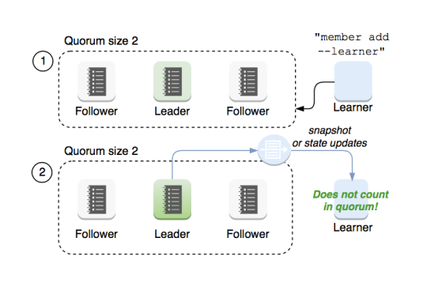
etcd基于Raft的一致性¶
选举方法
- 初始启动时，节点处于follower状态并被设定一个election timeout，如果在这一时间周期内没有收到 来自leader 的heartbeat，节点将发起选举：将自己切换为candidate 之后，向集群中其它follower 节点发送请求，询问其是否选举自己成为 leader。
- 当收到来自集群中过半数节点的接受投票后，节点即成为 leader，开始接收保存client 的数据并向其它 的follower 节点同步日志。如果没有达成一致，则candidate随机选择一个等待间隔（150ms ~ 300ms）再次发起投票，得到集群中半数以上follower接受的candidate将成为leader
- leader节点依靠定时向 follower 发送heartbeat来保持其地位。
- 任何时候如果其它follower 在election timeout 期间都没有收到来自leader 的heartbeat，同样会将 自己的状态切换为candidate 并发起选举。每成功选举一次，新 leader 的任期（Term）都会比之前 leader 的任期大 1 。
日志复制¶
当接Leader收到客户端的日志（事务请求）后先把该日志追加到本地的Log中，然后通过 heartbeat把该Entry同步给其他Follower，Follower接收到日志后记录日志然后向Leader发送 ACK，当Leader收到大多数（n/2+1）Follower的ACK信息后将该日志设置为已提交并追加到 本地磁盘中，通知客户端并在下个heartbeat中Leader将通知所有的Follower将该日志存储在自 己的本地磁盘中。
安全性¶
安全性是用于保证每个节点都执行相同序列的安全机制，如当某个Follower在当前Leader commit Log时变得不可用了，稍后可能该Follower又会被选举为Leader，这时新Leader可能 会用新的Log覆盖先前已committed的Log，这就是导致节点执行不同序列；Safety就是用于保 证选举出来的Leader一定包含先前committed Log的机制；
选举安全性（Election Safety）：每个任期（Term）只能选举出一个Leader
Leader完整性（Leader Completeness）：指Leader日志的完整性，当Log在任期Term1被 Commit后，那么以后任期Term2、Term3...等的Leader必须包含该Log；Raft在选举阶段就使 用Term的判断用于保证完整性：当请求投票的该Candidate的Term较大或Term相同Index更大 则投票，否则拒绝该请求。
失效处理¶
1) Leader失效：其他没有收到heartbeat的节点会发起新的选举，而当Leader恢复后由于步进 数小会自动成为follower（日志也会被新leader的日志覆盖）
2 ）follower节点不可用：follower 节点不可用的情况相对容易解决。因为集群中的日志内容始 终是从leader 节点同步的，只要这一节点再次加入集群时重新从 leader 节点处复制日志即可。
3 ）多个candidate：冲突后candidate将随机选择一个等待间隔（150ms ~ 300ms）再次发起 投票，得到集群中半数以上follower接受的candidate将成为leader
wal日志¶
wal日志是二进制的，解析出来后是以上数据结构LogEntry。其中第一个字段type，只有两种， 一种是 0 表示Normal， 1 表示ConfChange（ConfChange表示 Etcd本身的配置变更同步，比 如有新的节点加入等）。第二个字段是term，每个term代表一个主节点的任期，每次主节点变 更term就会变化。第三个字段是index，这个序号是严格有序递增的，代表变更序号。第四个字 段是二进制的data，将raft request对象的pb结构整个保存下。etcd 源码下有个tools/etcd- dump-logs，可以将wal日志dump成文本查看，可以协助分析Raft协议。
Raft协议本身不关心应用数据，也就是data中的部分，一致性都通过同步wal日志来实现，每个 节点将从主节点收到的data apply到本地的存储，Raft只关心日志的同步状态，如果本地存储实 现的有bug，比如没有正确的将data apply到本地，也可能会导致数据不一致。
etcd v3 存储，Watch以及过期机制¶
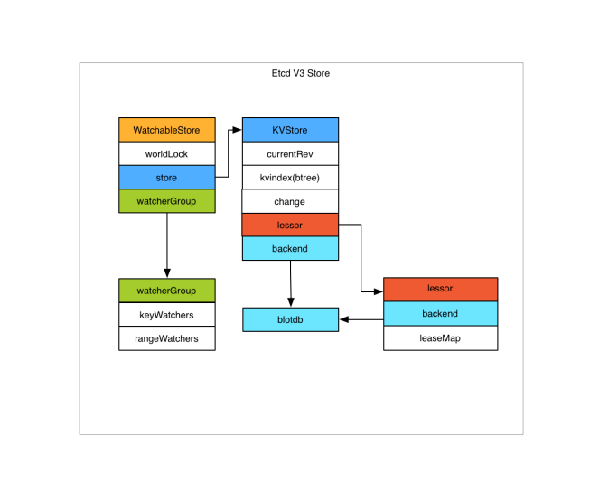
存储机制¶
etcdv3 store 分为两部分，一部分是内存中的索引，kvindex，是基于Google开源的一个 Golang的btree实现的，另外一部分是后端存储。按照它的设计，backend可以对接多种存储， 当前使用的boltdb。boltdb是一个单机的支持事务的kv存储，etcd 的事务是基于boltdb的事务 实现的。etcd 在boltdb中存储的key是reversion，value是 etcd 自己的key-value组合，也就 是说etcd 会在boltdb中把每个版本都保存下，从而实现了多版本机制。
reversion主要由两部分组成，第一部分main rev，每次事务进行加一，第二部分sub rev，同一 个事务中的每次操作加一。
etcd 提供了命令和设置选项来控制compact，同时支持put操作的参数来精确控制某个key的历 史版本数。
内存kvindex保存的就是key和reversion之前的映射关系，用来加速查询。
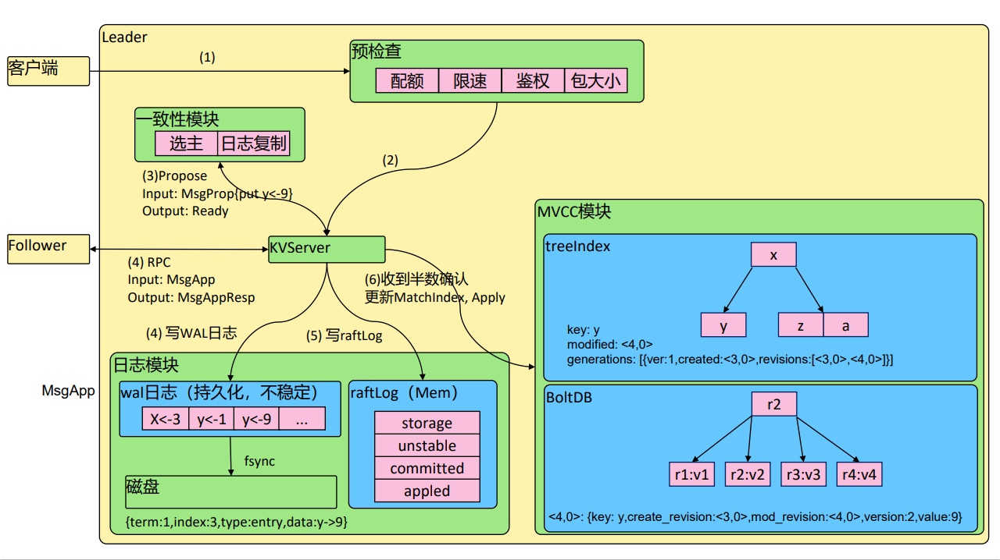
Watch机制¶
etcdv3 的watch机制支持watch某个固定的key，也支持watch一个范围（可以用于模拟目录的 结构的watch），所以 watchGroup包含两种watcher，一种是 key watchers，数据结构是每 个key对应一组watcher，另外一种是 range watchers, 数据结构是一个IntervalTree，方便通 过区间查找到对应的watcher。
同时，每个WatchableStore 包含两种 watcherGroup，一种是synced，一种是unsynced， 前者表示该group的watcher数据都已经同步完毕，在等待新的变更，后者表示该group的 watcher数据同步落后于当前最新变更，还在追赶。
当etcd 收到客户端的watch请求，如果请求携带了revision参数，则比较请求的revision和 store当前的revision，如果大于当前revision，则放入synced组中，否则放入unsynced组。同 时etcd会启动一个后台的goroutine持续同步unsynced的watcher，然后将其迁移到synced组。 也就是这种机制下，etcd v3 支持从任意版本开始watch，没有v2的 1000 条历史event表限制的 问题（当然这是指没有compact的情况下）
etcd 命令¶
查看集群成员状态
etcdctlmember list --write-out=table
+------------------+---------+---------+-----------------------+-----------------------+----- -------+
| ID | STATUS | NAME | PEER ADDRS | CLIENT ADDRS | IS LEARNER |
+------------------+---------+---------+-----------------------+-----------------------+----- -------+
| 8e9e05c52164694d | started | default | http://localhost:2380 | http://localhost:2379 | false |
+------------------+---------+---------+-----------------------+-----------------------+----- -------+
- 启动新etcd集群
docker run -d registry.aliyuncs.com/google_containers/etcd:3.5.0-0 /usr/local/bin/etcd
- 进入etcd容器
dockerps|grepetcd
docker exec –it
- 存入数据
etcdctlput x 0
- 读取数据
etcdctlget x -w=json
{"header":{"cluster_id":14841639068965178418,"member_id":10276657743932975437,"r evision":2,"raft_term":2},"kvs":[{"key":"eA==","create_revision":2,"mod_revision":2,"versi on":1,"value":"MA=="}],"count":1}
- 修改值
etcdctlput x 1
- 查询最新值
etcdctlget x
x
1
- 查询历史版本值
etcdctlget x --rev=2
x
0
etcd 成员重要参数¶
成员相关参数
--name 'default'
Human-readable name for this member.
--data-dir'${name}.etcd'
Path to the data directory.
--listen-peer-urls 'http://localhost:2380'
List of URLs to listen on for peer traffic.
--listen-client-urls 'http://localhost:2379'
List of URLs to listen on for client traffic.
集群相关参数
--initial-advertise-peer-urls 'http://localhost:2380'
List of this member's peer URLs to advertise to the rest of the cluster.
--initial-cluster 'default=http://localhost:2380'
Initial cluster configuration for bootstrapping.
--initial-cluster-state 'new'
Initial cluster state ('new' or 'existing').
--initial-cluster-token 'etcd-cluster'
Initial cluster token for the etcd cluster during bootstrap.
--advertise-client-urls 'http://localhost:2379'
List of this member's client URLs to advertise to the public.
etcd安全相关参数
--cert-file ''
Path to the client server TLS cert file.
--key-file ''
Path to the client server TLS key file.
--client-crl-file ''
Path to the client certificate revocation list file.
--trusted-ca-file ''
Path to the client server TLS trusted CA cert file.
--peer-cert-file ''
Path to the peer server TLS cert file.
--peer-key-file ''
Path to the peer server TLS key file.
--peer-trusted-ca-file ''
Path to the peer server TLS trusted CA file.
灾备¶
- 创建Snapshot
etcdctl--endpoints https://127.0.0.1:3379 --cert /tmp/etcd-certs/certs/127.0.0.1.pem --
key /tmp/etcd-certs/certs/127.0.0.1-key.pem --cacert/tmp/etcd-certs/certs/ca.pem
snapshot save snapshot.db
- 恢复数据
etcdctlsnapshot restore snapshot.db\
--name infra2 \
--data-dir=/tmp/etcd/infra2 \
--initial-cluster
infra0=http://127.0.0.1:3380,infra1=http://127.0.0.1:4380,infra2=http://127.0.0.1:5380 \
--initial-cluster-token etcd-cluster- 1 \
--initial-advertise-peer-urls http://127.0.0.1:5380
容量管理¶
单个对象不建议超过1.5M
默认容量2G
不建议超过8G
Alarm & Disarm Alarm¶
- 设置etcd存储大小
$ etcd--quota-backend-bytes =$((16 * 1024 * 1024))
- 写爆磁盘
$ while [ 1 ]; do dd if=/dev/urandombs=1024 count=1024 | ETCDCTL_API=3 etcdctlput key || break; done
- 查看endpoint状态
$ ETCDCTL_API =3 etcdctl--write-out = table endpoint status
- 查看alarm
$ ETCDCTL_API =3 etcdctlalarm list
- 清理碎片
$ ETCDCTL_API =3 etcdctldefrag
- 清理alarm
$ ETCDCTL_API =3 etcdctlalarm disarm
- 碎片整理
//keep one hour of history
$ etcd --auto-compaction-retention=1
//compact up to revision 3
$ etcdctlcompact 3
$ etcdctl defrag
Finished defragmenting etcd member [127.0.0.1:2379]
高可用etcd解决方案¶
etcd-operator: coreos开源的，基于kubernetes CRD完成etcd集群配置。Archived
https://github.com/coreos/etcd-operator
Etcdstatefulset Helm chart: Bitnami(powered by vmware)
https://bitnami.com/stack/etcd/helm
https://github.com/bitnami/charts/blob/master/bitnami/etcd
Etcd Operator¶
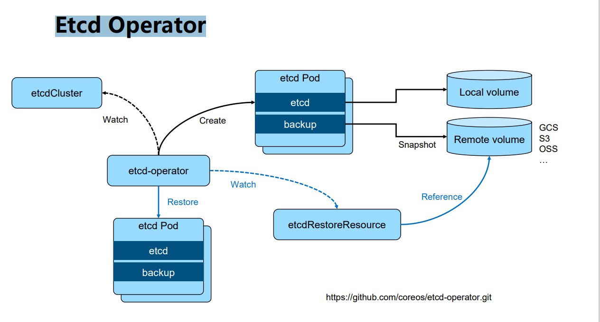
https://github.com/coreos/etcd-operator.git
基于 Bitnami 安装etcd高可用集群¶
- 安装helm
https://github.com/helm/helm/releases
- 通过helm安装etcd
helm repo add bitnamihttps://charts.bitnami.com/bitnami
helm install my-release bitnami/etcd
- 通过客户端与serve交互
kubectlrun my-release-etcd-client --restart='Never' --image docker.io/bitnami/etcd:3.5.0-debian- 10 - r94 --env ROOT_PASSWORD=$(kubectlget secret --namespace default my-release-etcd -o jsonpath="{.data.etcd-root-password}" | base64 --decode) --env ETCDCTL_ENDPOINTS="my-release- etcd.default.svc.cluster.local:2379" --namespace default --command --sleep infinity
Kubernetes如何使用etcd¶
etcd是kubernetes的后端存储
对于每一个kubernetesObject，都有对应的storage.go负责对象的存储操作
- pkg/registry/core/pod/storage/storage.go
API server 启动脚本中指定etcdservers集群
spec:
containers:
- command:
- kube-apiserver
- --advertise-address=192.168.34.2
- --enable-bootstrap-token-auth=true
- --etcd-cafile=/etc/kubernetes/pki/etcd/ca.crt
- --etcd-certfile=/etc/kubernetes/pki/apiserver-etcd-client.crt
- --etcd-keyfile=/etc/kubernetes/pki/apiserver-etcd-client.key
- --etcd-servers=https://127.0.0.1:2379
早期APIserver 对etcd做简单的Ping check，现在已经改为真实的etcd api call
Kubernets对象在etcd中的存储路径¶
- ksexec -it etcd-cadmin sh
- ETCDCTL_API=3
-
alias ectl='etcdctl --endpoints https://127.0.0.1:2379 \ --cacert/etc/kubernetes/pki/etcd/ca.crt \ --cert /etc/kubernetes/pki/etcd/server.crt \ --key /etc/kubernetes/pki/etcd/server.key
-
ectlget --prefix --keys-only / /registry/namespaces/calico-apiserver /registry/networkpolicies/calico-apiserver/allow-apiserver /registry/operator.tigera.io/tigerastatuses/apiserver /registry/pods/calico-apiserver/calico-apiserver-77dffffcdf-g2tcx /registry/pods/default/toolbox-68f79dd5f8-4664n
etcd在集群中所处的位置¶
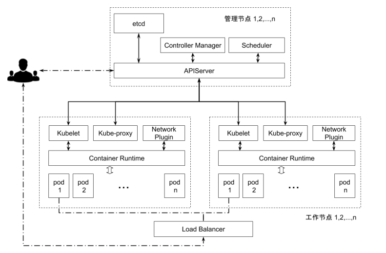
Kubernetes如何使用etcd¶
etcd是kubernetes的后端存储
对于每一个kubernetes Object，都有对应的storage.go 负责对象的存储操作
- pkg/registry/core/pod/storage/storage.go
API server 启动脚本中指定etcd servers集群
- /usr/local/bin/kube-apiserver --etcd_servers=https://localhost:4001 --etcd- cafile=/etc/ssl/kubernetes/ca.crt--storage-backend=etcd3 --etcd-servers- overrides=/events#https:// localhost:4002
堆叠式etcd集群的高可用拓扑¶
- 这种拓扑将相同节点上的控制平面和etcd成员耦合在一起。优点在于建立起来非常容易，并且 对副本的管理也更容易。但是，堆叠式存在耦合失败的风险。如果一个节点发生故障，则etcd 成员和控制平面实例都会丢失，并且集群冗余也会受到损害。可以通过添加更多控制平面节点 来减轻这种风险。因此为实现集群高可用应该至少运行三个堆叠的Master节点。
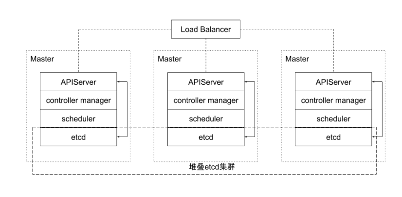
外部etcd集群的高可用拓扑¶
- 该拓扑将控制平面和etcd成员解耦。如果丢失一个Master节点，对etcd成员的影响较小，并 且不会像堆叠式拓扑那样对集群冗余产生太大影响。但是，此拓扑所需的主机数量是堆叠式拓 扑的两倍。具有此拓扑的群集至少需要三个主机用于控制平面节点，三个主机用于etcd集群。
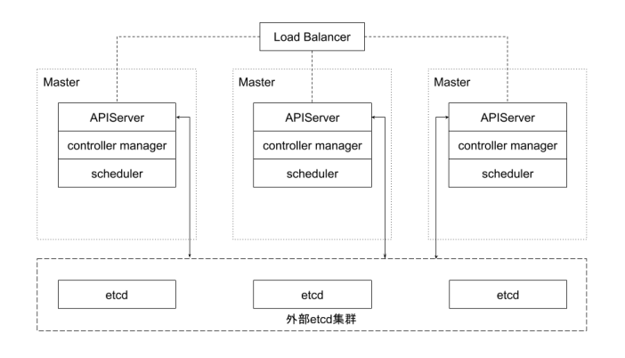
实践 - etcd集群高可用¶
多少个peer最适合？
- 1 个？ 3 个？ 5 个？
- 保证高可用是首要目标
- 所有写操作都要经过leader
- peer多了是否能提升集群并读操作的并发能力？ ➢ apiserver的配置只连本地的etcd peer ➢ apiserver的配置指定所有etcd peers，但只有当前连接的etcd member异常， apiserver才会换目标
- 需要动态flexup吗？
保证apiserver和etcd之间的高效性通讯
- apiserver和etcd部署在同一节点
- apiserver和etcd之间的通讯基于gRPC ➢ 针对每一个object，apiserver和etcd之间的Connection -> stream共享 ➢ http2的特性 ➢ Streamquota ➢ 带来的问题？对于大规模集群，会造成链路阻塞 ➢ 10000 个pod，一次list操作需要返回的数据可能超过100M ➢ k get pod --all-namespaces|wc–l ➢ 8520 ➢ k get pod -oyaml--all-namespaces>pods ➢ ls -l pods ➢ -rw-r--r--1 root root 75339736 Apr 5 03:13 pods
实践 – etcd存储规划¶
- 本地vs远程？ ➢ RemoteStorage ➢ 优势是假设永远可用，现实真是如此吗？ ➢ 劣势是IO效率，可能带来的问题？ ➢ 最佳实践： ➢ LocalSSD ➢ 利用localvolume分配空间
- 多少空间？ ➢ 与集群规模相关，思考：为什么每个member的DB size不一致？
etcd 安全性¶
➢ peer和peer之间的通讯加密 ➢ 是否有需求 ➢ TLS的额外开销 ➢ 运营复杂度增加 ➢ 数据加密 ➢ 是否有需求？ ➢ Kubernetes提供了针对secret的加密 ➢ https://kubernetes.io/docs/tasks/administer-cluster/encrypt-data/
事件分离
- 对于大规模集群，大量的事件会对etcd造成压力
- API server 启动脚本中指定etcdservers集群 ➢ /usr/local/bin/kube-apiserver --etcd_servers=https://localhost:4001 --etcd- cafile=/etc/ssl/kubernetes/ca.crt--storage-backend=etcd3 --etcd-servers- overrides=/events#https://localhost:4002
如何监控?
减少网络延迟¶
减少网络延迟
- 数据中心内的RTT大概是数毫秒，国内的典型RTT约为50ms，两大洲之间的RTT可能慢至 400ms。因此建议etcd集群尽量同地域部署。
- 当客户端到Leader的并发连接数量过多，可能会导致其他Follower节点发往Leader的请求因 为网络拥塞而被延迟处理。在Follower节点上，可能会看到这样的错误： ➢ dropped MsgPropto 247ae21ff9436b2d since streamMsg'ssending buffer is full
- 可以在节点上通过流量控制工具（Traffic Control）提高etcd成员之间发送数据的优先级来避 免。
减少磁盘I/O延迟¶
对于磁盘延迟，典型的旋转磁盘写延迟约为 10 毫秒。对于SSD（Solid State Drives，固态硬 盘），延迟通常低于 1 毫秒。HDD（Hard Disk Drive，硬盘驱动器）或者网盘在大量数据读写 操作的情况下延时会不稳定。因此强烈建议使用SSD。
同时为了降低其他应用程序的I/O操作对etcd的干扰，建议将etcd的数据存放在单独的磁盘内。 也可以将不同类型的对象存储在不同的若干个etcd集群中，比如将频繁变更的event对象从主 etcd集群中分离出来，以保证主集群的高性能。在APIServer处这是可以通过参数配置的。这些 etcd集群最好也分别能有一块单独的存储磁盘。
如果不可避免地，etcd和其他的业务共享存储磁盘，那么就需要通过下面ionice命令对etcd服务 设置更高的磁盘I/O优先级，尽可能避免其他进程的影响。
$ ionice -c2 -n0 -p 'pgrepetcd'
保持合理的日志文件大小¶
etcd以日志的形式保存数据，无论是数据创建还是修改，它都将操作追加到日志文件，因此日志 文件大小会随着数据修改次数而线性增长。
当Kubernetes集群规模较大时，其对etcd集群中的数据更改也会很频繁，集群日记文件会迅速 增长。
为了有效降低日志文件大小，etcd会以固定周期创建快照保存系统的当前状态，并移除旧日志文 件。另外当修改次数累积到一定的数量（默认是 10000 ，通过参数“--snapshot-count”指 定），etcd也会创建快照文件。
如果etcd的内存使用和磁盘使用过高，可以先分析是否数据写入频度过大导致快照频度过高，确 认后可通过调低快照触发的阈值来降低其对内存和磁盘的使用。
设置合理的存储配额¶
存储空间的配额用于控制etcd数据空间的大小。合理的存储配额可保证集群操作的可靠性。如果 没有存储配额，也就是etcd可以利用整个磁盘空间，etcd的性能会因为存储空间的持续增长而 严重下降，甚至有耗完集群磁盘空间导致不可预测集群行为的风险。如果设置的存储配额太小， 一旦其中一个节点的后台数据库的存储空间超出了存储配额，etcd就会触发集群范围的告警，并 将集群置于只接受读和删除请求的维护模式。只有在释放足够的空间、消除后端数据库的碎片和 清除存储配额告警之后，集群才能恢复正常操作。
自动压缩历史版本¶
etcd会为每个键都保存了历史版本。为了避免出现性能问题或存储空间消耗完导致写不进去的问 题，这些历史版本需要进行周期性地压缩。压缩历史版本就是丢弃该键给定版本之前的所有信息， 节省出来的空间可以用于后续的写操作。etcd支持自动压缩历史版本。在启动参数中指定参数 “--auto-compaction”，其值以小时为单位。也就是etcd会自动压缩该值设置的时间窗口之 前的历史版本。
定期消除碎片化¶
压缩历史版本，相当于离散地抹去etcd存储空间某些数据，etcd存储空间中将会出现碎片。这 些碎片无法被后台存储使用，却仍占据节点的存储空间。因此定期消除存储碎片，将释放碎片化 的存储空间，重新调整整个存储空间。
数据备份¶
- 备份方案 ➢ 基于事件重放 ➢ etcd备份：备份完整的集群信息，灾难恢复 ➢ etcdctlsnapshot save
- 频度？ ➢ 时间间隔太长： ➢ 能否接受userdatalost？ ➢ 如果有外部资源配置，如负载均衡等，能否接受数据丢失导致的leak？ ➢ 时间间隔太短： ➢ 对etcd的影响 ➢ 做snapshot的时候，etcd会锁住当前数据 ➢ 并发的写操作需要开辟新的空间进行增量写，导致磁盘空间增长
- 如何保证备份的时效性，同时防止磁盘爆掉？ ➢ Autodefrag？
优化运行参数¶
当网络延迟和磁盘延迟固定的情况下，可以优化etcd运行参数来提升集群的工作效率。etcd基于Raft 协议进行Leader选举，当Leader选定以后才能开始数据读写操作，因此频繁的Leader选举会导致数 据读写性能显著降低。可以通过调整心跳周期（HeatbeatInterval）和选举超时时间（Election Timeout），来降低Leader选举的可能性。
心跳周期是控制Leader以何种频度向Follower发起心跳通知。心跳通知除表明Leader活跃状态之外， 还带有待写入数据信息，Follower依据心跳信息进行数据写入，默认心跳周期是100ms。选举超时时 间定义了当Follower多久没有收到Leader心跳，则重新发起选举，该参数的默认设置是1000ms。
如果etcd集群的不同实例部署在延迟较低的相同数据中心，通常使用默认配置即可。如果不同实例部 署在多数据中心或者网络延迟较高的集群环境，则需要对心跳周期和选举超时时间进行调整。建议心 跳周期参数推荐设置为接近etcd多个成员之间平均数据往返周期的最大值，一般是平均RTT的0.55- 1.5倍。如果心跳周期设置得过低，etcd会发送很多不必要的心跳信息，从而增加CPU和网络的负担。 如果设置得过高，则会导致选举频繁超时。选举超时时间也需要根据etcd成员之间的平均RTT时间来 设置。选举超时时间最少设置为etcd成员之间RTT时间的 10 倍，以便对网络波动。
心跳间隔和选举超时时间的值必须对同一个etcd集群的所有节点都生效，如果各个节点配置不同，就 会导致集群成员之间协商结果不可预知而不稳定。
etcd备份存储¶
etcd的默认工作目录下会生成两个子目录：wal和snap。wal是用于存放预写式日志，其最大的 作用是记录整个数据变化的全部历程。所有数据的修改在提交前，都要先写入wal中。
snap是用于存放快照数据。为防止wal文件过多，etcd会定期（当wal中数据超过 10000 条记录 时，由参数“--snapshot-count”设置）创建快照。当快照生成后，wal中数据就可以被删除了。
如果数据遭到破坏或错误修改需要回滚到之前某个状态时，方法就有两个：一是从快照中恢复数 据主体，但是未被拍入快照的数据会丢失；而是执行所有WAL中记录的修改操作，从最原始的 数据恢复到数据损坏之前的状态，但恢复的时间较长。
备份方案实践¶
官方推荐etcd集群的备份方式是定期创建快照。和etcd内部定期创建快照的目的不同，该备份方式依赖外部 程序定期创建快照，并将快照上传到网络存储设备以实现etcd数据的冗余备份。上传到网络设备的数据，都 应进行了加密。即使当所有etcd实例都丢失了数据，也能允许etcd集群从一个已知的良好状态的时间点在任 一地方进行恢复。根据集群对etcd备份粒度的要求，可适当调节备份的周期。在生产环境中实测，拍摄快照 通常会影响集群当时的性能，因此不建议频繁创建快照。但是备份周期太长，就可能导致大量数据的丢失。
这里可以使用增量备份的方式。如图 3 - 8 所示，备份程序每 30 分钟触发一次快照的拍摄。紧接着它从快照结 束的版本（Revision）开始，监听etcd集群的事件，并每 10 秒钟将事件保存到文件中，并将快照和事件文件 上传到网络存储设备中。 30 分钟的快照周期对集群性能影响甚微。当大灾难来临时，也至多丢失 10 秒的数据。 至于数据修复，首先把数据从网络存储设备中下载下来，然后从快照中恢复大块数据，并在此基础上依次应 用存储的所有事件。这样就可以将集群数据恢复到灾难发生前。
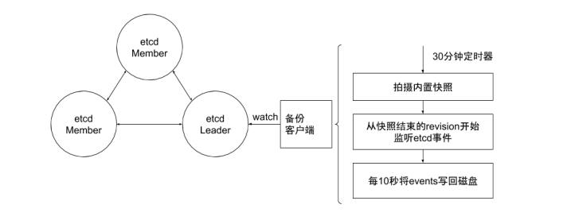
etcd 常见问题¶
多少个peer最适合？¶
- 1 个？ 3 个？ 5 个？
- 保证高可用是首要目标
- 所有写操作都要经过leader
- peer多了是否能提升集群并读操作的并发能力？ ➢ apiserver的配置只连本地的etcd peer ➢ apiserver的配置指定所有etcd peers，但只有当前连接的etcd member异常， apiserver才会换目标
- 需要动态flexup吗？
保证apiserver和etcd之间的高效性通讯¶
保证apiserver和etcd之间的高效性通讯
- apiserver和etcd部署在同一节点
- apiserver和etcd之间的通讯基于gRPC ➢ 针对每一个object，apiserver和etcd之间的Connection -> stream共享 ➢ HTTP/2的特性 ➢ Streamquota ➢ 带来的问题？对于大规模集群，会造成链路阻塞 ➢ 10000 个pod，一次list操作需要返回的数据可能超过100M ➢ k get pod --all-namespaces|wc–l ➢ 8520 ➢ k get pod -oyaml--all-namespaces>pods ➢ ls -l pods ➢ -rw-r--r--1 root root 75339736 Apr 5 03:13 pods
增强版backup方案¶
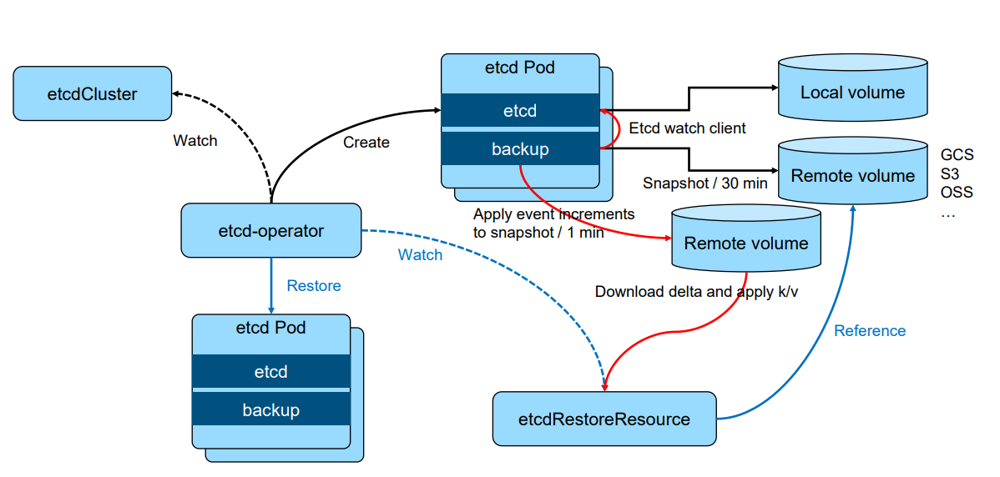
etcd数据加密¶
➢ https://kubernetes.io/docs/tasks/administer-cluster/encrypt-data/
apiVersion: API Server.config.k 8 s.io/v 1
kind: EncryptionConfiguration
resources:
- secrets
providers:
- identity: {}
- aesgcm:
keys:
- name: key 1
secret: c 2 VjcmV 0 IGlzIHNlY 3 VyZQ==
- name: key 2
secret: dGhpcyBpcyBwYXNzd 29 yZA==
- aescbc:
keys:
- name: key 1
secret: c 2 VjcmV 0 IGlzIHNlY 3 VyZQ==
- secretbox:
keys:
- name: key 1
secret: YWJjZGVmZ 2 hpamtsbW 5 vcHFyc 3 R 1 dnd 4 eXoxMjM 0 NTY=
- kms:
name : myKmsPlugin
endpoint: unix:///tmp/socketfile.sock
cachesize: 100
Kubernetes中数据分离¶
- 对于大规模集群，大量的事件会对etcd造成压力
- API server 启动脚本中指定etcd servers集群
/usr/local/bin/kube-apiserver--etcd-servers=https://localhost:4001 --etcd- cafile=/etc/ssl/kubernetes/ca.crt--storage-backend=etcd3 --etcd-servers- overrides=/events#https://localhost:4002
查询APIServer¶
返回某namespace中的所有Pod
GET /api/v1/namespaces/test/pods
200 OK
Content-Type: application/json
{ "kind": "PodList", "apiVersion": "v1", "metadata": {"resourceVersion":"10245"}, "items": [...] }
从 12345 版本开始，监听所有对象变化¶
GET /api/v1/namespaces/test/pods?watch=1&resourceVersion=10245¶
200 OK Transfer-Encoding: chunked
Content-Type: application/json
{ "type": "ADDED", "object": {"kind": "Pod", "apiVersion": "v1", "metadata": {"resourceVersion": "10596", ...}, ...}
} { "type": "MODIFIED", "object": {"kind": "Pod", "apiVersion": "v1", "metadata": {"resourceVersion": "11020", ...}, ...} } ...
分页查询¶
GET /api/v1/pods?limit=500¶
200 OK Content-Type: application/json
{
"kind": "PodList", "apiVersion": "v1", "metadata": { "resourceVersion":"10245", "continue": "ENCODED_CONTINUE_TOKEN", }, "items": [...] // returns pods 1- 500 }
GET /api/v1/pods?limit=500&continue=ENCODED_CONTINUE_TOKEN
200 OK Content-Type: application/json
{ "kind": "PodList", "apiVersion": "v1", "metadata": { "resourceVersion":"10245", "continue": "ENCODED_CONTINUE_TOKEN_2", }, "items": [...] // returns pods 501- 1000 }
ResourceVersion¶
- 单个对象的resourceVersion
- 对象的最后修改resourceVersion
- List对象的resourceVersion
- 生成listresponse时的resourceVersion
- List行为
- List对象时，如果不加resourceVersion，意味着需要MostRecent数据，请求会击穿 APIServer缓存，直接发送至etcd
- APIServer通过Label过滤对象查询时，过滤动作是在APIServer端，APIServer需要向 etcd发起全量查询请求
遭遇到的陷阱¶
频繁的leaderelection
etcd 分裂
etcd 不响应
与apiserver之间的链路阻塞
磁盘暴涨
少数etcd 成员Down¶
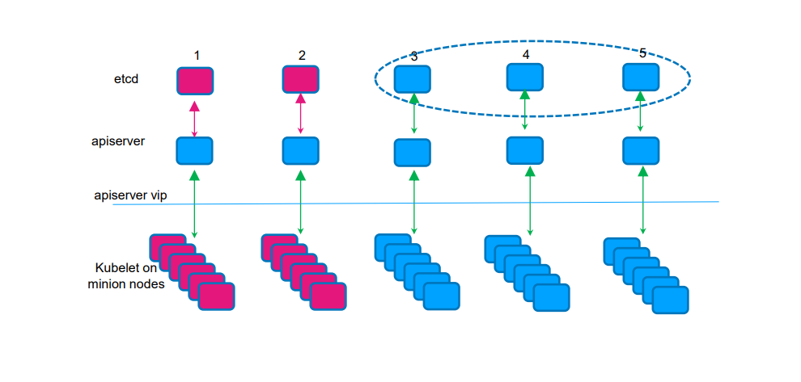
Master节点出现网络分区¶
Case: 网络分区出现 Group#1: master-1, master- 2 Group#2: master-3, master-4, master- 5
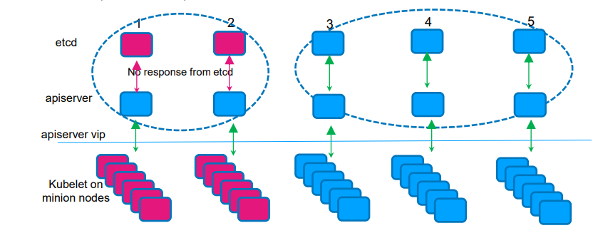
参考资料¶
B树和B+树